python 基础
python 是做什么的，我就不多累述了，百度一下就能大致知道python的用处的。python2.x估计快没戏了，除了维护旧项目，新项目都不建议用python2.x，我们直接从最新的版本python3.7.2开始吧。基础挺重要的，如果你是0基础的话，建议一步一步跟着教程学习。需悉心、静心、耐心的学习和不断地重复，切忌好高骛远，有好的根基才能从容。
环境搭建
我们不扯那么多乱七八糟的东西，Linux什么的先放一边，默认是0开始，windows 10(64位)开发环境
下载
首先进入python的官网 Python-3.7.2 然后把网页拉到最后面，应该会看到下图一样的版本列表，我们选 window64位（x86-64代表64位，x86代表32位）的下载。下载路径什么的，随便选，不过不建议下载到C盘（否则你不久后会发现C盘不够用，手动狗头.jpg）。我自己的是下载到 D:\download，然后安装到 F:\python37
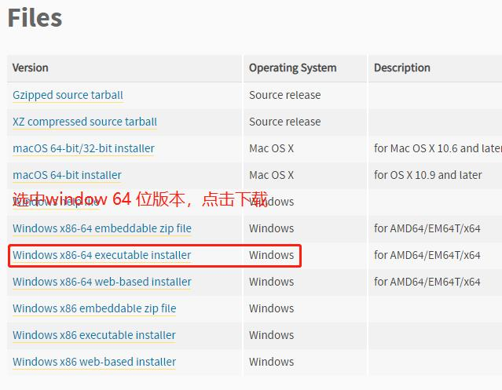
安装
假设你已经把python下载到 d:\download\python-3.7.2.exe 那我们把它安装到 f:\python37 中吧，当然你也可以安装到别的地方，没什么特定要求。双击python-3.7.2.exe会弹出以下对话框，按图中步骤执行
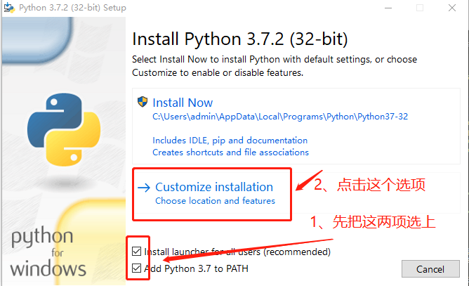然后直接点击 Next 下一步
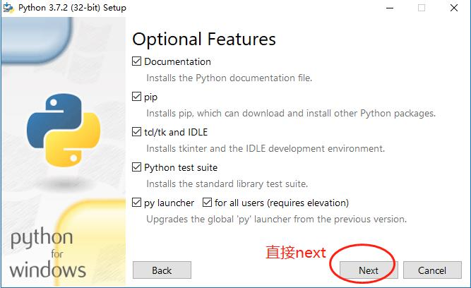把图中的安装地址修改为 f:\python37 然后点击install，等待安装完毕。
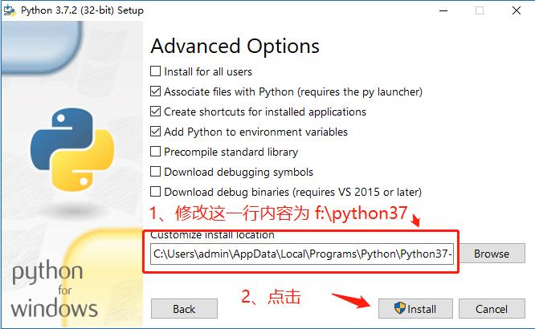
测试
同时按照win+r键
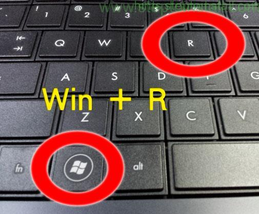调出这个对话框
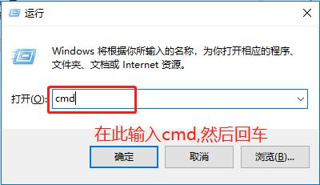然后我们会看到这个黑黑的对话框，称之为命令行界面。在对话框中输入python -V(大写的V)，如果控制台输出python的版本信息，说明安装成功。我这里已经安装python-3.7.1，不再重复安装
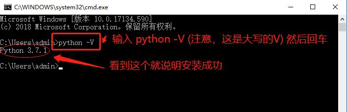
完成
更新一下python的包管理工具pip，以后我们都会用这个工具来安装标准库、第三方库什么的。
在命令行界面中输入：python -m pip install --upgrade pip
然后回车，等待命令执行完安装交互界面ipython。ipython比python自带的交互界面强大且养美观，以后都会用ipython来验证或者测试小量的代码。
在命令行界面中输入：pip install ipython
看，我们这就用到pip来安装库
hello world
按照惯例，我们的第一个程序，输出"what the fuck hello world!"
编辑器
我们写程序之前先选个写代码的东东：编辑器。能写代码的工具太多了，只要能够编辑文本的都可以用来写代码，你甚至可以用记事本来写代码，不过如果不想出什么莫名其妙的错误的话，不建议用记事本。我自己习惯使用sublime text 3(中文官网)，主打轻量、插件丰富；主流的还有专门写python的PyCharm(英文官网)；巨硬（微软）的VSCode(巨硬官网)，同样插件多；NotePad++(英文官网)...等等。具体安装过程和如何使用不是本文的重点，请自行百度。不过，如果你打算用sublime text 3 的话，而且不知道怎么用，可以看sublime text 3 使用教程，本文也默认使用sublime text 3。
第一个程序
来，我们写下第一个程序。如果不懂代码什么意思，没关系，随后我们就会讲。做着做就OK
首先我们在d盘创建一个文件夹py3test（
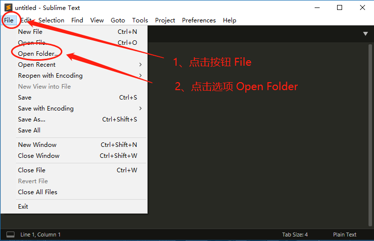如何新建文件夹应该会吧）你也可以起别的名称，不过路径不建议包含中文。接着打开安装好的编辑器sublime text 3，应该看到以下界面，按图步骤执行，找到刚才创建的文件夹d:\py3test，打开一个文件夹。如下图示就对了，看到py3test，右键点击它，出现对话框，选New File 左键单击，然后按ctrl+s保存文件，命名为first.py（python代码文件以后缀名".py"结尾）
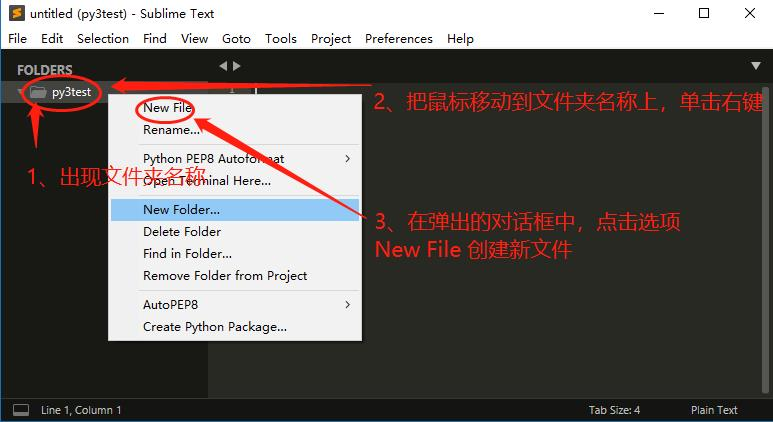复制下面的代码，粘贴到first.py中
def hello(): print('what the fuck hello world!') if __name__ == '__main__': hello()复制后，sublime text 3运行代码的快捷键为：ctrl+B，如控制台输出（如果控制台出现一堆乱码一样的错误，请看这里sublime text 3 python 中文乱码解决方法），那第一步到此就成功了。可以进行下一步的学习。
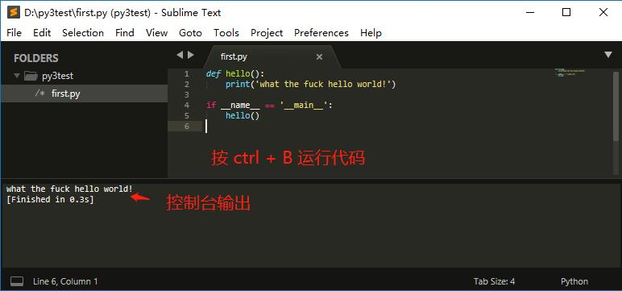
基本数据类型
什么是python基本的数据类型呢？
简要回答就是：布尔类型(Booleans)、数值类型(Numbers)、字符串类型(Strings)、字节类型(Bytes)、、列表类型(Lists)、元组类型(Tuples)、集合类型(Sets)、字典类型(Dictionaries)。
变量
讲数据类型前，我们先谈谈变量
使用ipython
这里往下会有大量的测试代码，这时需要用调用第三方交互界面工具--ipython来测试。调出命令行界面，在界面中输入ipython，然后回车就可以看到ipython了。
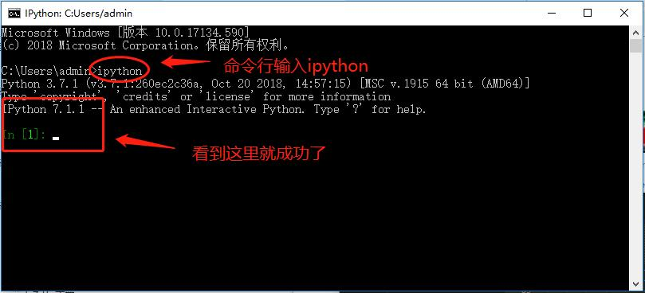什么是变量？
用非人类的话来说，就是某个存储单元或某块存储空间的标识符号 -- 变量名。变量名代表某块存储空间，在高级语言中，某块内存里面的内容（变量值）可以随时变化，我们称之这块内存区域的标识符号为变量；换人话来说，如果说你家是一个内存区域，那你家的门牌号就是变量名，你家里面的东西就是变量值。一般来说，我可以根据你家的门牌号找到你。门牌号 <--> 你的家 <--> 你家里的东西，这就构成了指向关系，你家的门牌号指向你的家。
定义变量
在python中定义变量很简单的，拿来即用，用完就扔，并不需要像c语言那样的声明变量类型，变量会自动根据变量值取得数据类型，这样就弱化了类型，提高了易用性
a = 1 # 给变量a赋值正整数 1，那a的数据类型就是整型int print(type(a)) # 输出 int a = '1' # 修改变量a的值为字符 '1'，那a的数据类型就是字符串str print(type(a)) # 输出 str b = '2' # 给变量b赋值字符串 '2'，那b的数据类型就是字符串str print(type(b)) # 输出 str c = True # 给变量c赋值布尔值 True，那c的数据类型就是布尔bool print(type(c)) # 输出 bool注：
type，python的内置函数，一般用来返回对象的数据类型；print，python的内置函数，用来输出内容到控制台；单等号=不是等于的意思，在这里是赋值，双等号==才是等于。c语言的变量定义，必须是你声明什么类型，就赋值什么类型的值，否则会报错的。
int a = 1; // 声明变量a为整形，并赋值整数1，正确 int b = "what the fuck hello world"; // 声明变量b为整形，赋值字符串，错误 char c[] = "what the fuck hello world"; // 声明变量c为字符数组，赋值字符串，正确命名变量
以往python的变量名是以下划线 _、26个英文字母（包含大小写）、数字，且不能以数字开头的随机组合表示的
哈哈哈哈，新版3.5之后就支持中文命名了，对于英文不好的同学重大利好，不过依然不能以数字开头a = 1 # 合法 _a = 1 # 合法 _2 = 1 # 合法 2 = 1 # 数字开头，非法 2a = 1 # 数字开头，非法 2_a = 1 # 数字开头，非法我 = '狗剩' # 合法 事情 = '在学习Python' # 合法 print(我+事情) # 输出 狗剩在学习Python
布尔类型(Booleans)
布尔类型就是我们数学逻辑上的“真”、“假”值，在python里用"True"、"False"表示，内置函数为bool。bool函数（函数的定义后面讲）可以判断对象的真假值；常见的假值：布尔值 False、数值 0、空字符串 ''、空字节 b''、空列表 []、空元组 ()、空集合 {}、空字典 {}...等等，没错，集合和字典都是用大括号表示，后面介绍它们的不同点
print(bool(0)) # 数字0为 False print(bool(1)) # 数字1为 True '''我是块注释符里面的，python解释器会把我忽略掉''' print(bool(-1)) # 数字-1为 True, 这里有点反直觉，哈哈哈哈 print(bool('')) # 空字符串为 Fase """ 我也是块注释符里面的 python解释器会把我忽略掉 """ print(bool('0')) # 字符串'0'为 True, 注意：数字0和字符'0'是两个不同的对象注：“#”是python的行注释符，作用是单行注释；6个单引号 '''''' 或6个双引号 """""" 都是Python的块注释符，它们的效果是一样的，作用是多行注释，python的解释器会把行注释符后面和块注释符里面的内容忽略掉，不会当有效代码来执行。我们通常需要用自然语言来解释代码的意思，以方便他人看懂，这时候就用到注释符了。
把上面的代码复制（ctrl+c, ctrl+V应该会吧？喵喵？？？）到ipython中，可以看到以下结果，你也可以测试别的用例。
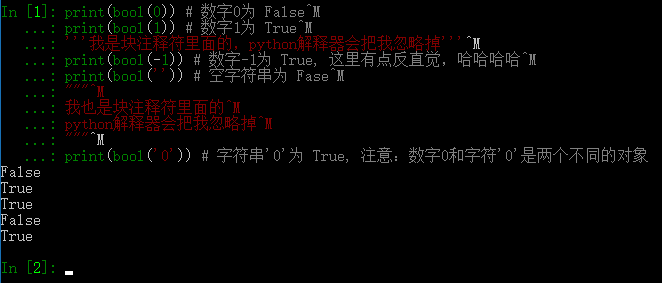
数值(Numbers)
所谓数值，就是我们数学上学的，小数（浮点数）、负数、0、整数、大整数...这些，如果有更复杂的，暂时不用管，一般就用到前面说的。
print(-1) print(1, 'a', 3, 'bc') # 输出 1 a 3 bc print(-0.5) # 输出 -0.5 print(0) # 输出 0 print(1.55) # 输出 1.55 print(2) # 输出 2 # 输出大整数 20000000000000000000000000000000000000 print(20000000000000000000000000000000000000)注意：
上面的print是python 的一个内置函数，用来输出文本到控制台，可接收1个乃至多个输入，当print(1, 'a', 3, 'bc')多个参数时，以英文逗号隔开，输出结果以空格连接。“#”是python的注释符，python的解释器会把#号后面的东西忽略掉，不会当有效代码来执行打开命令行界面，输入ipython，然后回车调出我们之前安装好交互界面，然后把上面的代码复制到ipython里，再回车后可看到输出结果
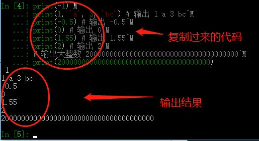也可以复制到文件里，例如我们之前创建的first.py，按ctrl+B执行代码
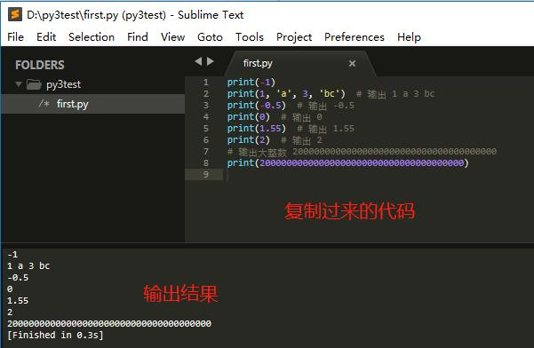
字符串(Strings)
字符串说起来既简单，又不简单，为啥呢？
简单地说嘛，在python中，字符串a都可以表示为单引号'a'、双引号"a"、三单引号'''a'''、三双引号"""a"""，它们是等价的。
喵喵喵？？？好像哪里不对，说好的三引号是注释呢？为啥这里是字符串？其实都没错。当三引号引起来的字符串赋值给某个变量时，它就是字符串；否则就是注释'a' == "a" # True 'a' == '''a''' # True 'a' == """a""" # True注意：
在编程语言中，单等号"="叫赋值运算符，等号左边的叫变量，右边的叫变量值；双等号"=="才是我们数学意义上的比较运算符 -- “等于”